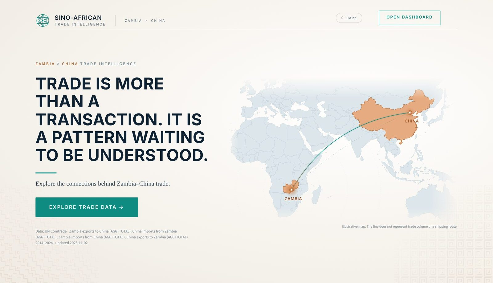
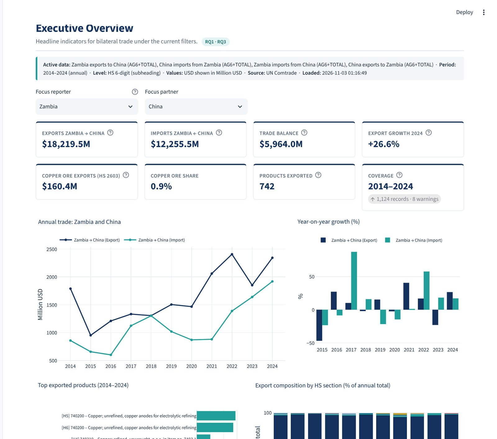
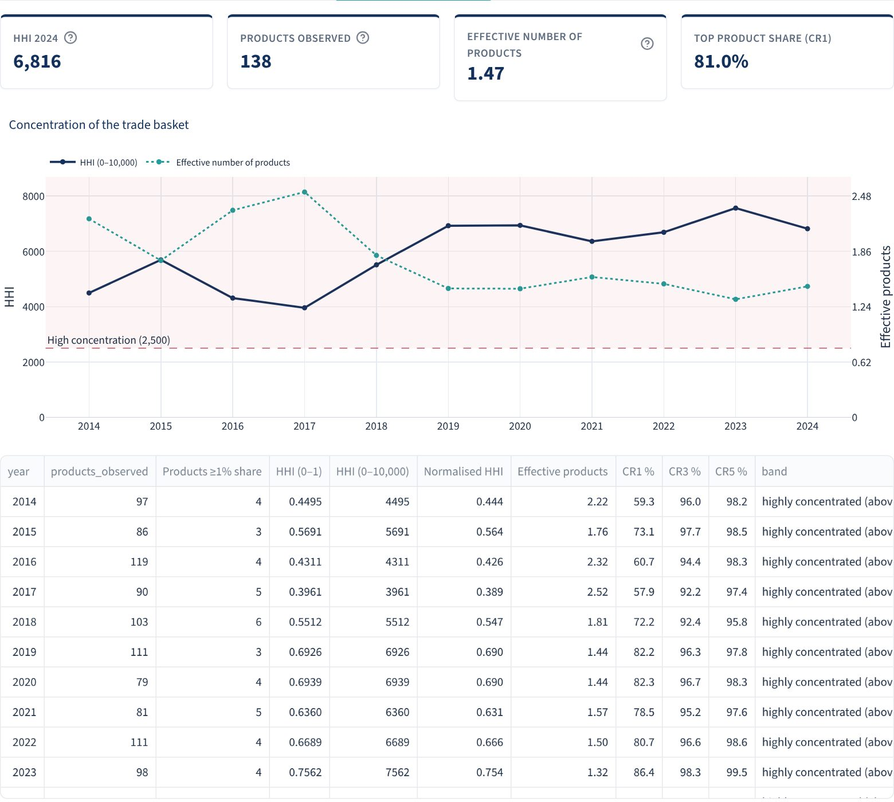
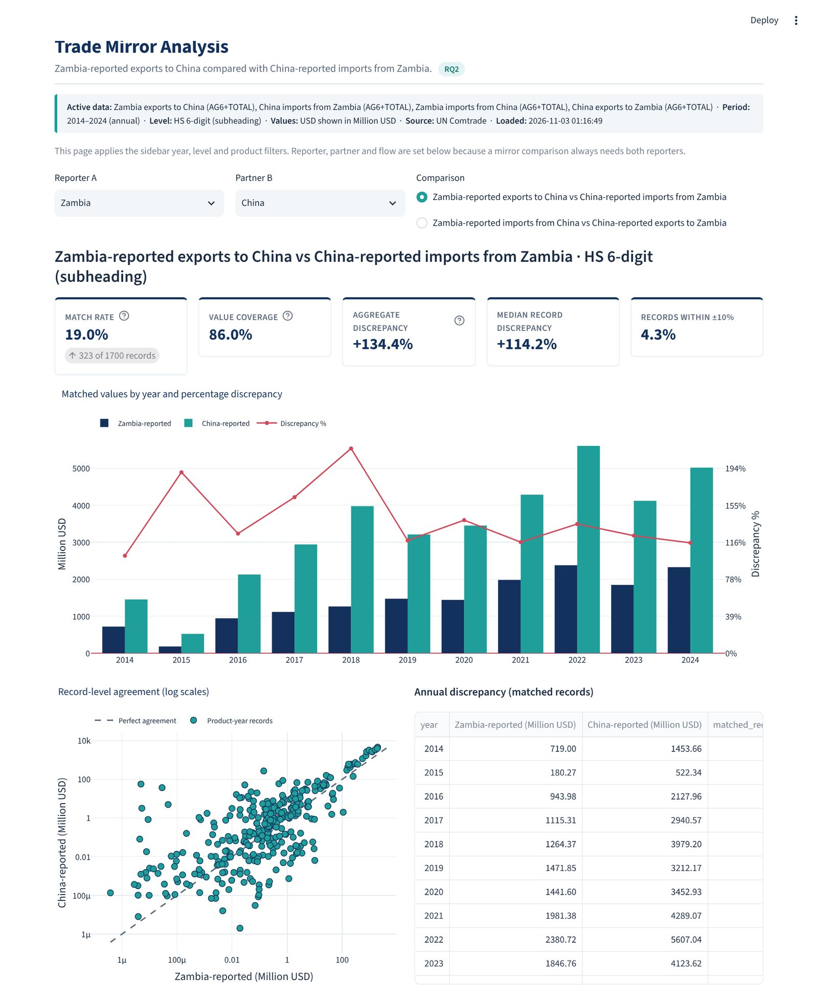
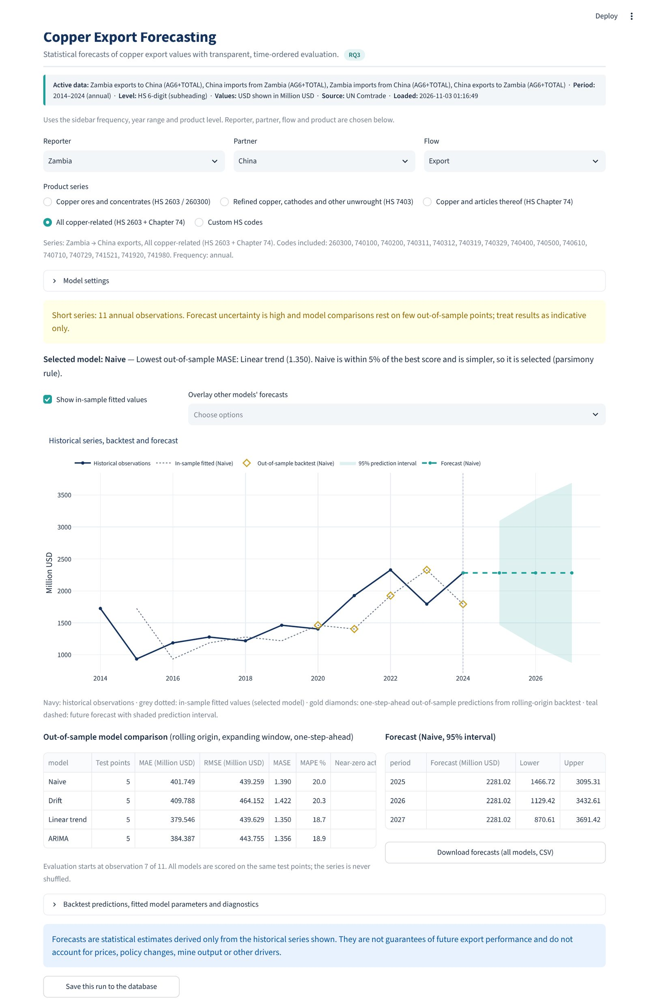
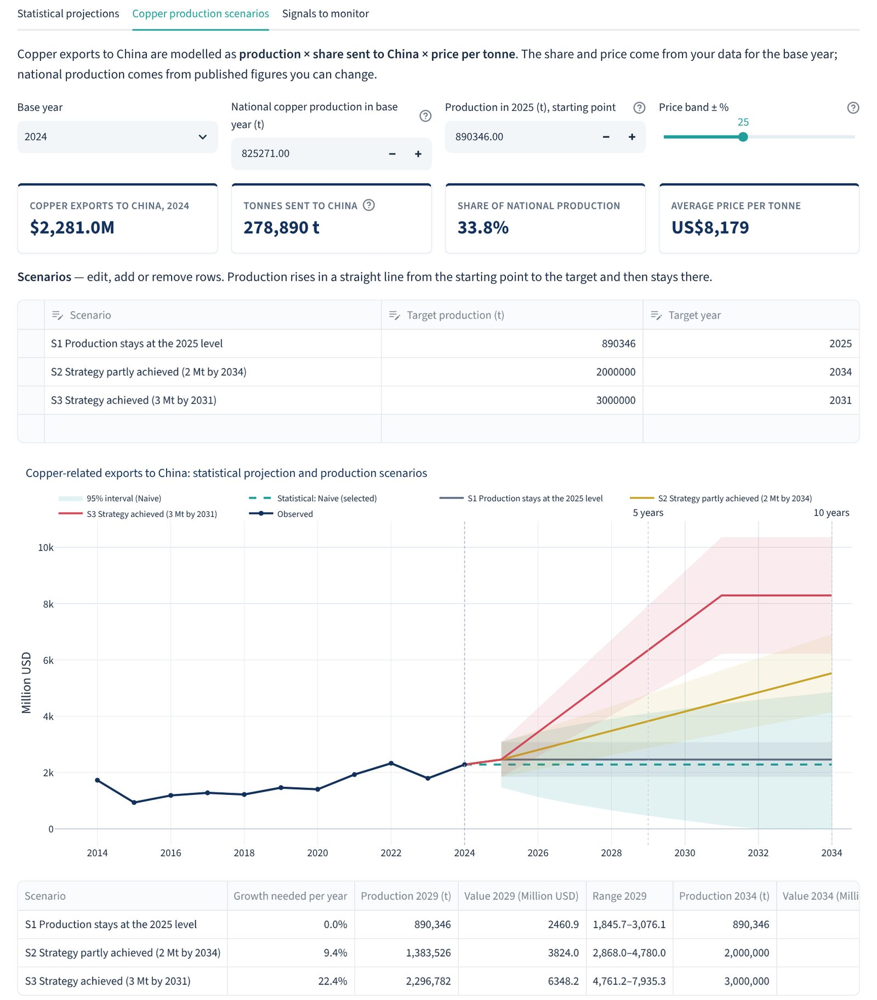

Executive overview
Headline indicators for exports, imports, the trade balance and the copper share, with trends, top products and an automatic coverage check against the reported totals.
A data science and decision support system for Zambia–China trade analytics: validated UN Comtrade data, export concentration, mirror statistics, copper forecasting and a five- and ten-year outlook.

Zambia–China trade data are public but scattered, change classification over time and differ between the two reporting countries. The dashboard brings preparation, analysis, comparison and forecasting together in one reproducible tool that runs on an ordinary laptop.
Each part of the dashboard answers one of the three research questions of the thesis.
Trends, product composition and export concentration (HHI, effective number of products, concentration ratios).
Zambia-reported exports compared record by record with China-reported imports, with matched and unmatched records labelled openly.
Naive, drift, trend and ARIMA models tested with rolling-origin backtesting, plus projections and production scenarios to 2034.
All screenshots show the real UN Comtrade data loaded in the dashboard.
Headline indicators for exports, imports, the trade balance and the copper share, with trends, top products and an automatic coverage check against the reported totals.

The export basket held 79 to 138 products a year, yet behaved like one of about one and a half equally sized products. The HHI stayed above 3,900 points every year.

China recorded more than twice the value that Zambia recorded, mainly for copper anodes and cathodes. The page shows match rates, coverage and the known methodological reasons for such gaps.

Every model is tested on the same time-ordered points against a naive benchmark. With eleven yearly values, the simple models were as accurate as ARIMA, and every forecast is shown with its interval.

Statistical projections to 2029 and 2034 sit beside editable copper production scenarios. At 2024 prices, exports to China in 2034 range from about US$2.5 billion if output stays flat to about US$8.3 billion if the 3-million-tonne target is met.

The online version is a read-only demonstration. The full system, with uploads, validation, imports and the UN Comtrade API connector, runs locally on Windows.
git clone https://github.com/trustsims/Sino-Africa-Trade-Intelligence.git cd Sino-Africa-Trade-Intelligence py -m venv .venv .\.venv\Scripts\Activate.ps1 python -m pip install -r requirements.txt python scripts\init_db.py python -m streamlit run app.py